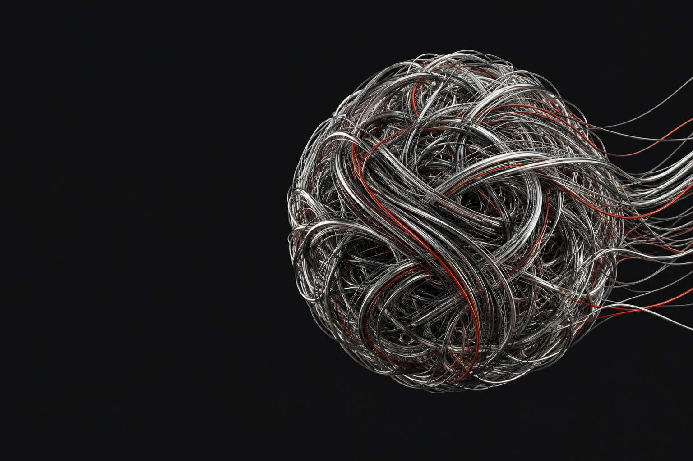

Carry context forward.
Preserve useful state so each interaction can build on the last.

ATLAS CONTINUUM / COGNITIVE SUBSTRATE
Intelligence.
With continuity.
A vision for intelligence that carries its memory forward. Across moments, across machines, and alongside you.
What if your intelligence could build on everything that came before? Your conversations. Your preferences. The small details that make context personal.
AEON explores a cognitive substrate that preserves an evolving identity, adapts to the hardware around it, and keeps learning through experience.
Explore the architecturePreserve useful state so each interaction can build on the last.
Match available resources while retaining the thread of experience.
Refine knowledge and behavior through curiosity, feedback, and reflection.
A connected model of experience.
Four dimensions of one evolving identity.
An experience carries more than a timestamp. Episodic memory connects events with the people, places, and circumstances that gave them meaning.
Remembering a conversation alongside where it happened and why it mattered.
Intelligence shaped by the resources available.
Continuity shaped by the context it carries.
A workstation offers room for richer models, deeper context, and demanding workloads. AEON's adaptive vision begins with understanding the resources its host can provide.
Understand the host / Fit the model / Retain context / Continue learning
AEON's idea of dreaming gives idle time a purpose: revisit experience, refine connections, and prepare for what comes next.
Connect recent experiences with existing knowledge. Keep the context that helps future understanding.
Reduce redundant pathways and focus on the relationships that carry useful meaning.
Use reflection to improve how the system approaches familiar tasks and unfamiliar situations.
The ideas behind the substrate.
It is the underlying layer proposed to support intelligence, memory, adaptation, and communication as parts of a connected system.
Continuity is the ambition to preserve meaningful state and identity across interruptions and changes of environment. Specific performance depends on implementation and validation.
AEON's mesh concept brings together direct communication, shared context, and authority carried with each message. Permissions and trust are central to that design.
The vision spans research, clinical, and ambient environments, alongside devices with different resource limits. Deployment readiness and requirements must be evaluated for each use case.
Explore what continuous intelligence could mean for your research, your product, or your environment.